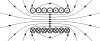

current_density

Definition: In electromagnetism, current density is the amount of charge per unit time that flows through a unit area of a chosen cross section. The current density vector is defined as a vector whose magnitude is the electric current per cross-sectional area at a given point in space, its direction being that of the motion of the positive charges at this point. In SI base units, the electric current density is measured in amperes per square metre.
Source: Wikipedia
Wikipedia Page
Wikidata Page